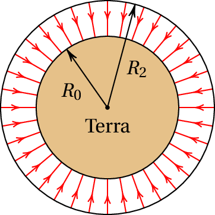

6. Fluxo elétrico
Problema 1
Na atmosfera existe um campo eléctrico que aponta na vertical, para baixo. A nível do mar, o módulo desse campo, é aproximadamente 120 N/C e diminui em função da altura; 2 km acima do nível do mar o campo é aproximadamente 66 N/C. Que pode concluir acerca do sinal das cargas livres nos dois primeiros quilómetros da atmosfera? Calcule a carga volúmica média nessa região.
A lei de Gauss relaciona as cargas livres numa região com o fluxo elétrico através da fronteira dessa região. Como tal, para determinar a carga livre que existe na atmosfera, devemos encontrar uma superfície fechada onde seja possível calcular o fluxo elétrico. Com os dados do problema, podemos calcular facilmente o fluxo numa superfície horizontal (perpendicular ao campo) que esteja a uma altura do nível do mar ou 2 km por cima. Usaremos uma superfície fechada com duas tampas horizontais iguais de área , uma ao nível do mar e a outra 2 km por cima, com paredes laterais verticais, tal como mostra a figura seguinte:
Na tampa de cima o campo elétrico, , tem módulo 66 N/C e aponta para dentro da superfície fechada. Como tal, nessa tampa há fluxo negativo igual a (unidades SI):
Na tampa de baixo, o o campo elétrico, , produz fluxo positivo porque aponta para fora da superfície fechada e o valor do fluxo nessa tampa é:
Nas paredes laterais não há fluxo, porque as linhas de campo são tangentes a essa superfície. O fluxo total na superfície fechada é então:
O resultado positivo permite concluir que na atmosfera (dentro da superfície fechada escolhida) existem cargas livres positivas.
Aplicando a lei de Gauss obtém-se a carga no interior da superfície fechada:
Como o volume da superfície fechada, em unidades SI, é igual a , então a carga volúmica média é:
Comentários: Foi admitido que as linhas de campo, verticais, são paralelas entre si. Realmente as linhas verticais em dois pontos diferentes da Terra não são paralelas, porque são perpendiculares à superfície da Terra que é curva. Para obter maior precisão, a superfície fechada usada para aplicar a lei de Gauss poderia estar formada por duas esferas concêntricas: a própria superfície esférica da Terra, com raio de km, e a segunda superfície esférica com centro no centro da Terra e raio km, tal como mostra a figura seguinte.
O fluxo elétrico que sai do volume entre essas duas esferas é (unidades SI):
E a carga volúmica média será:
Este resultado, mais correto, é muito semelhante ao resultado obtido
admitindo linhas de campo paralelas, devido a que as curvaturas das
duas esferas (inverso do raio) são muito semelhantes.
Problema 2
Uma carga pontual de 5 nC encontra-se a 6 cm de um fio retilíneo muito comprido, com carga linear constante de 7 nC/cm. Calcule a força elétrica sobre o fio (sugestão: calcule melhor a força do fio sobre a carga pontual, que é mais fácil de calcular, e pela lei de ação e reação deverá ter o mesmo módulo).
Como foi demonstrado no livro, o campo elétrico de um fio retilíneo infinito, com carga linear constante é na direção radial desde o fio e com módulo
onde é a distância desde o fio.
O módulo da força do fio sobre a carga pontual é (unidades SI):
Problema 5
Uma esfera de raio tem uma carga elétrica distribuída uniformemente dentro do seu volume. Usando a lei de Gauss, calcule o módulo do campo elétrico num ponto a uma distância do centro da esfera. Considere os casos e .
Devido à simetria da esfera carregada uniformemente, o campo elétrico deverá ser na direção radial, passando pelo centro da esfera, para fora se for positiva, ou para dentro se for negativa. E o módulo do campo, , dependerá apenas da distância até centro da esfera. A figura seguinte mostra as linhas de campo no caso de carga positiva.

Para obter a expressão do campo fora da esfera ( ) e dentro da esfera ( ), aplicaremos a lei de Gauss nas duas superfícies S1 e S2 apresentadas na figura anterior. Cada uma dessas superfícies esféricas, de raio , tem área e é perpendicular às linhas de campo. Como tal, o fluxo através dessas esferas é e, aplicando a lei de Gauss, obtém-se a expressão para :
No caso de S1, com , a carga interna dentro de S1 é a carga total da esfera, , e a expressão do módulo do campo é:
No caso de S2, com , a carga interna dentro de S2 é proporcional ao volume da esfera S2:
e o módulo do campo é:
Problema 6
Uma partícula pontual com massa igual a 25 g e carga de 50 nC encontra-se pendurada de um fio de 7 cm que está colado a um plano vertical. O plano vertical tem uma carga superficial constante nC/cm2 e pode ser considerado infinito. Calcule o ângulo que o fio faz com o plano vertical.

O campo elétrico produzido pelo plano é horizontal, com módulo constante . A força elétrica sobre a carga pontual positiva é horizontal, para a esquerda, e com módulo (unidades SI):
Sobre a carga pontual atuam três forças externas: a força elétrica, a tensão no fio, e o peso. O lado esquerdo da figura seguinte mostra essas forças.
Como a carga pontual fica em equilíbrio, a soma dessas 3 forças deverá ser nula. O problema podia ser resolvido definindo um sistema de dois eixos e resolvendo as duas equações das somas das componentes das forças nos dois eixos iguais a zero. No entanto, é mais fácil observar que para que a soma dos 3 vetores seja nula, se forem colocados um a seguir ao outro, como no lado direito da figura acima, deverão formar um triângulo, que neste caso é retângulo com catetos de comprimento e . Como tal, a tangente do ângulo deverá ser igual a , e o ângulo será: